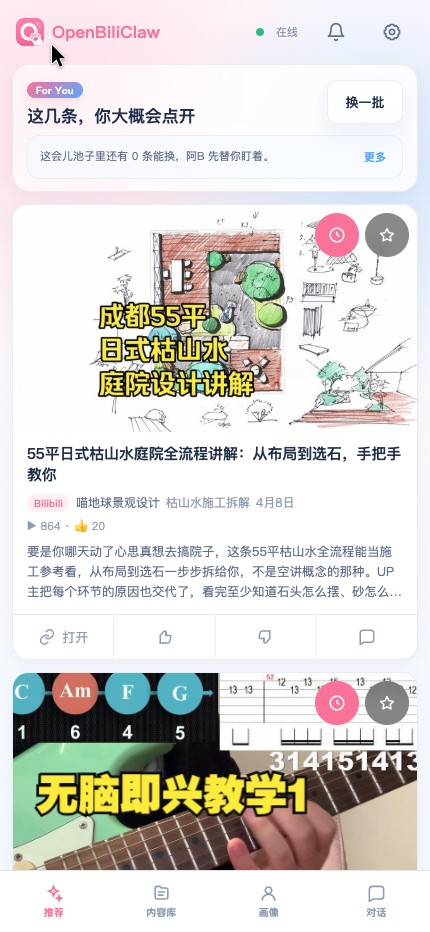
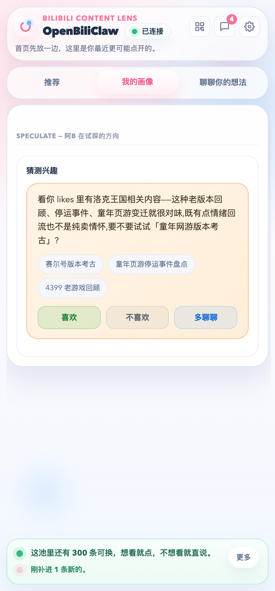
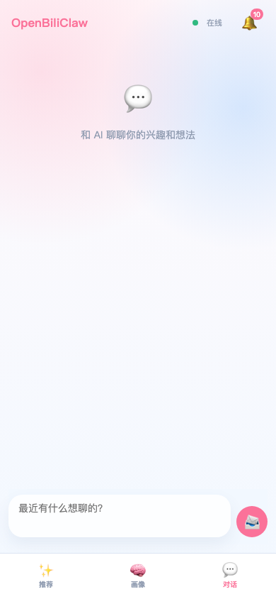
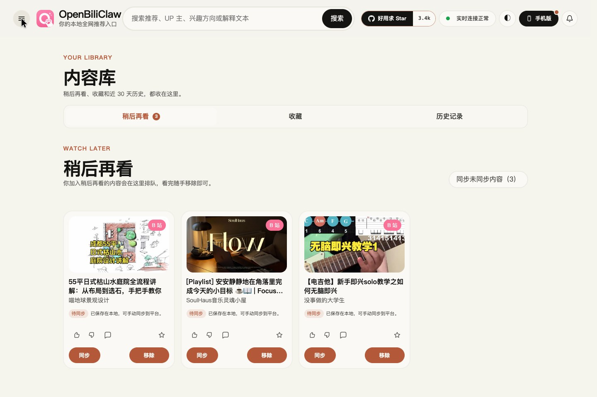

先理解人，再找内容
从授权的使用信号、反馈和对话形成画像，再让这份理解参与搜索、评估和推荐。
开源 · 本地运行 · 只为你一个人构建
由真实操作录屏与仓库既有功能截图剪辑而成。 文字稿与素材说明
按你的习惯，选择入口
连接同一后端，查看推荐、给反馈、保存内容。

大屏浏览推荐、展开理由，也能搜索和筛选。
看桌面操作 ↓在浏览器里看推荐、给反馈，也能打开内容库。
看插件操作 ↓
在手机浏览器刷推荐、点喜欢，查看共享内容库。
看手机操作 ↓不止是一个推荐列表

看看它如何理解你；模型的推断可以检查、纠正。

除了兴趣主题，还关注你喜欢的内容形式、表达风格和深度。

对提出的新方向确认、拒绝、暂时搁置，或继续聊聊。

把具体偏好告诉它，让反馈与对话参与后续理解。
以上为仓库既有功能截图，界面版本可能与操作录屏不同。

感兴趣的内容，留着慢慢看
读到值得保存的推荐，就收进内容库。桌面和手机连接同一后端，继续查看同一批记录。
截图展示桌面内容库的「稍后再看」。
把分散在不同平台的兴趣，连接起来。
不同来源支持的发现、登录与初始化能力不同，按需连接即可。
开始使用
推荐从桌面安装包开始。准备一台电脑、可用的模型服务，以及至少一个可提供兴趣信号的内容来源。
打开后端的初始化页面，配置 LLM 和 embedding，并连接希望使用的来源。按来源要求登录或填写公开用户名。
http://127.0.0.1:8420/setup/等待服务检查、信号导入和首轮发现完成，再打开推荐首页。后续可随时给反馈、调整兴趣。
http://127.0.0.1:8420/web桌面包仍为实验性预发布，首次启动可能遇到系统安全提示。精简版首次下载向量模型，with-embedding 版已内置；两者都需要另行配置 LLM。
完整安装指南与常见问题为什么做 OpenBiliClaw
只为你一个人构建，让不同平台的兴趣在你自己的系统里连接起来。
从授权的使用信号、反馈和对话形成画像，再让这份理解参与搜索、评估和推荐。
主动搜索、关联探索，也尝试相邻的新方向。每条推荐附上理由，选择仍交给你。
喜欢、不感兴趣和具体纠正进入后续学习。画像可以查看和编辑，手动修正不会被 AI 重建直接覆盖。
如何工作
浏览器插件连接平台，本地后端负责理解、发现和推荐。桌面、手机等入口共享这套服务。
公开内容、授权的个人信号
以及你给出的反馈
理解兴趣 → 发现内容 → 生成推荐
本地保存画像、推荐与历史查看推荐、对话与反馈
让下一轮继续学习
更多使用入口
桌面 Web 与浏览器插件之外，也可以在手机或已有的 Agent 工作流中访问。它们都需要连接运行中的后端。
还需要运行后端。插件负责连接内容平台和提供交互入口，后端负责画像、发现、推荐和存储。桌面安装包会帮你运行这个后端。
OpenBiliClaw 以 MIT 协议开源。你需要配置可用的 LLM 服务，通常使用自己的 API Key；模型服务的费用取决于所选服务商和用量。本地 embedding 可以使用 Ollama。
画像和历史默认保存在你运行后端的电脑上，插件不向项目开发者运营的服务器上传数据。使用云端模型时，必要内容会发送给你配置的服务商；自托管或远程访问的边界见隐私政策。
不用。先连接你常用的来源即可。部分来源支持公开发现或公开用户名初始化；需要个人历史、收藏等信号的来源，按引导登录并授权。
由社区一起完善
试试看，也欢迎反馈问题、贡献代码，或在 GitHub 上支持这个项目。